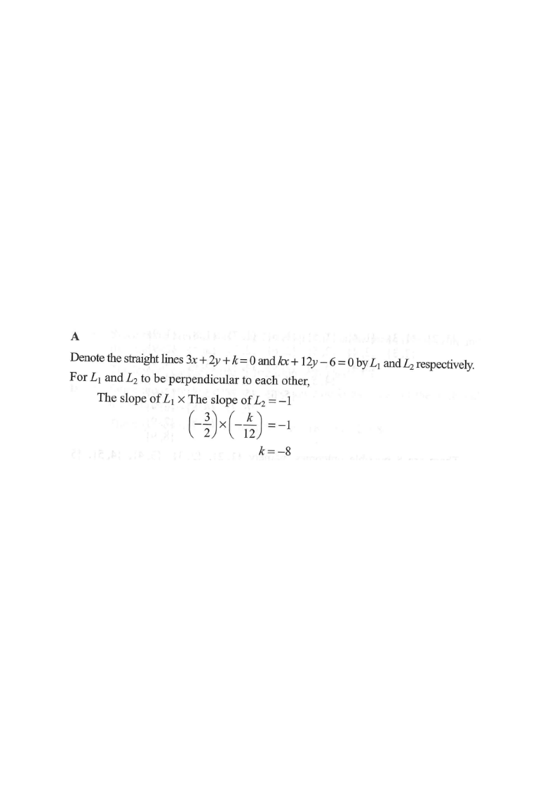

直線 · 垂直條件

$$3x+2y+k=0\Rightarrow y=-\frac{3}{2}x-\frac{k}{2}$$
$$kx+12y-6=0\Rightarrow y=-\frac{k}{12}x+\frac{1}{2}$$
$$\left(-\frac{3}{2}\right)\left(-\frac{k}{12}\right)=-1$$
$$\frac{3k}{24}=-1\quad\Longrightarrow\quad \frac{k}{8}=-1$$
$$k=-8$$
覆核：兩斜率為 $-\dfrac{3}{2}$ 與 $\dfrac{2}{3}$，乘積 $=-1$ ✓。